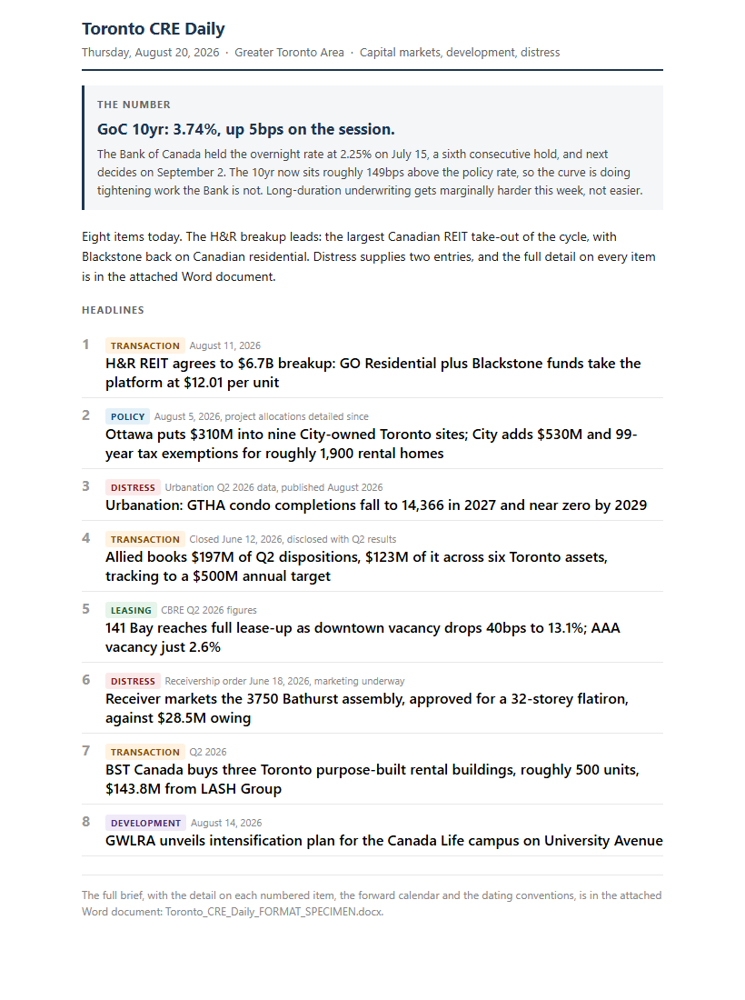

August 2026
A weekday brief on Greater Toronto Area commercial real estate, built from free sources. The agent sweeps, confirms, dates and scores each item, builds a Word document and leaves it as an email draft for review.
Deal news is scattered across newswires, regulatory filings, court records and trade press. Much of it is paywalled, and recycled stories routinely read as if they happened today. A useful brief has to be short, sourced and correctly dated.

A dry run on August 19, 2026 showed that a strict calendar-day rule let evening press releases fall between editions and never publish. The window was changed to run from one edition's cutoff to the next, with a ledger of what has already run so nothing repeats.